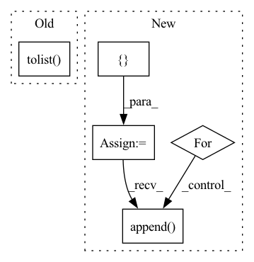

Pattern ID :34385
Before Change
scores, ids = self.model.search(query.reshape(1, -1), limit)
// Map results to [(id, score)]
return list(zip(ids[0].tolist(), (scores[0]).tolist() ))
def save(self, path):
// Write indexAfter Change
scores, ids = self.model.search(queries, limit)
// Map results to [(id, score)]
results = []
for x, score in enumerate(scores):
results.append( list(zip(ids[x].tolist(), score.tolist())))
return results
def save(self, path):In pattern: SUPERPATTERN
Frequency: 4
Non-data size: 5
Instances Fragment ID: 98645745
Project Name: neuml/txtai
Commit Name: e84d7c003b02c0ec6a451130a66a3f5652f38e48
Time: 2021-01-08
Author: 561939+davidmezzetti@users.noreply.github.com
File Name: src/python/txtai/ann.py
M Class Name: Faiss
N Class Name: Faiss
M Method Name: search(3)
N Method Name: search(3)
M Parent Class: ANN
N Parent Class: ANN
M File Name: src/python/txtai/ann.py
N File Name: src/python/txtai/ann.py
M Start Line: 158
M End Line: 161
N Start Line: 166
N End Line: 173
Before Change
os.path.join(output_dir, f"round_{idx}"), "bias_table.csv"))
bias_table["example_id"] = bias_table["example_id"].map(
lambda x: eval(x).decode("UTF-8")) // pylint:disable=eval-used
ids = np.concatenate(list(
ds.map(lambda example: example["example_id"]).batch(
batch_size).as_numpy_iterator())).tolist()
ids = list(map(lambda x: x.decode("UTF-8"), ids))
subgroup_labels = list(
ds.map(lambda example: example["subgroup_label"]).batch(
batch_size).as_numpy_iterator())After Change
round_idx = []
subgroup_ids = []
num_samples = []
prob_representation = []
for idx in range(num_rounds):
ds = dataloader.train_ds
bias_table = pd.read_csv(
os.path.join(
os.path.join(output_dir, f"round_{idx}"), "bias_table.csv"))
predictions_merge = merge_subgroup_labels(ds, bias_table, batch_size)
for subgroup_id in range(num_subgroups):
prob_i = (predictions_merge["subgroup_label"]
== subgroup_id).sum() / len(predictions_merge)
round_idx.append(idx)
subgroup_ids.append(subgroup_id)
num_samples.append(len(predictions_merge))
prob_representation.append( prob_i)
return pd.DataFrame({
"num_samples": num_samples,
"prob_representation": prob_representation,
"round_idx": round_idx, Fragment ID: 98645744
Project Name: google/uncertainty-baselines
Commit Name: f5b53459d654b40668528e806a24776b53864278
Time: 2022-11-03
Author: no-reply@google.com
File Name: experimental/shoshin/evaluate_model_lib.py
M Class Name: AnonimousClass
N Class Name: AnonimousClass
M Method Name: evaluate_active_sampling(5)
N Method Name: evaluate_active_sampling(4)
M Parent Class:
N Parent Class:
M File Name: experimental/shoshin/evaluate_model_lib.py
N File Name: experimental/shoshin/evaluate_model_lib.py
M Start Line: 34
M End Line: 59
N Start Line: 68
N End Line: 92
Before Change
if self.multi_label == True:
class_column = self.input_data[self.image_label_col].to_numpy()
self.classes = (np.unique(class_column)).tolist()
self.class_to_idx = class_to_idx(self.classes)
else:
self.classes = np.unique(list(self.input_data[self.image_label_col]))
self.class_to_idx = class_to_idx(self.classes)After Change
self.class_to_idx = class_to_idx(self.classes)
self.multi_label_idx = []
for i, row in self.input_data.iterrows():
t = []
for u in self.classes:
if u in row[self.image_label_col]:
t.append(1)
else:
t.append( 0)
self.multi_label_idx.append(t)
self.input_data["MULTI_LABEL_IDX"] = multi_label_idx
else: Fragment ID: 98645732
Project Name: radtorch/radtorch
Commit Name: 3e70a28d24fa2852c2d542f11569511ba6bca21a
Time: 2020-03-08
Author: elbanan@users.noreply.github.com
File Name: radtorch/datautils.py
M Class Name: dataset_from_table
N Class Name: dataset_from_table
M Method Name: __init__(11)
N Method Name: __init__(11)
M Parent Class: Dataset
N Parent Class: Dataset
M File Name: radtorch/datautils.py
N File Name: radtorch/datautils.py
M Start Line: 125
M End Line: 127
N Start Line: 103
N End Line: 137
Before Change
regressors[reg] = df[reg]
// Make sure column order is consistent
regressors = regressors[sorted(regressors.columns.tolist() )]
regressors = regressors.values
if n_lags == 0:After Change
regressors["additive"] = additive_regressors
if multiplicative_regressors is not None:
multiplicative_regressor_feature_windows = []
for i in range(0, multiplicative_regressors.shape[1]):
// stride into num_forecast at dim=1 for each sample, just like we did with time
multiplicative_regressor_feature_windows.append(
_stride_time_features_for_forecasts(multiplicative_regressors[:, i]))
multiplicative_regressors = np.dstack(multiplicative_regressor_feature_windows)
regressors["multiplicative"] = multiplicative_regressors
inputs["regressors"] = regressors Fragment ID: 98645752
Project Name: ourownstory/neural_prophet
Commit Name: 71ff07c9baa8002f2611b7f6d3f8f94825e59b1b
Time: 2020-09-14
Author: hansika.hewamalage@monash.edu
File Name: neuralprophet/time_dataset.py
M Class Name: AnonimousClass
N Class Name: AnonimousClass
M Method Name: tabularize_univariate_datetime(10)
N Method Name: tabularize_univariate_datetime(10)
M Parent Class:
N Parent Class:
M File Name: neuralprophet/time_dataset.py
N File Name: neuralprophet/time_dataset.py
M Start Line: 195
M End Line: 213
N Start Line: 201
N End Line: 267
Before Change
scores, ids = self.model.search(query.reshape(1, -1), limit)
// Map results to [(id, score)]
return list(zip(ids[0].tolist() , (scores[0]).tolist()))
def save(self, path):
// Write indexAfter Change
scores, ids = self.model.search(queries, limit)
// Map results to [(id, score)]
results = []
for x, score in enumerate(scores):
results.append( list(zip(ids[x].tolist(), score.tolist())))
return results
def save(self, path): Fragment ID: 98645738
Project Name: neuml/txtai
Commit Name: e84d7c003b02c0ec6a451130a66a3f5652f38e48
Time: 2021-01-08
Author: 561939+davidmezzetti@users.noreply.github.com
File Name: src/python/txtai/ann.py
M Class Name: Faiss
N Class Name: Faiss
M Method Name: search(3)
N Method Name: search(3)
M Parent Class: ANN
N Parent Class: ANN
M File Name: src/python/txtai/ann.py
N File Name: src/python/txtai/ann.py
M Start Line: 158
M End Line: 161
N Start Line: 166
N End Line: 173